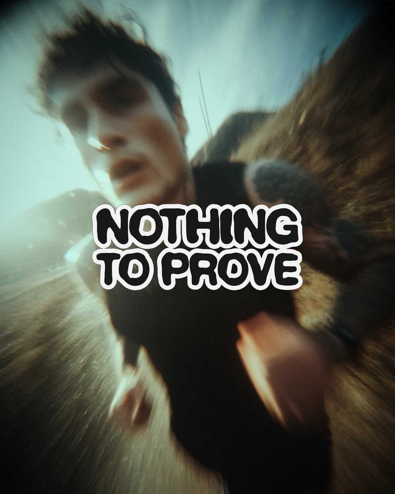

// Proyecto
Holy
Club en movimiento

Nothing to prove.
Because it’s not about being the best, but about feeling capable.


// Proyecto
Club en movimiento

Nothing to prove.
Because it’s not about being the best, but about feeling capable.